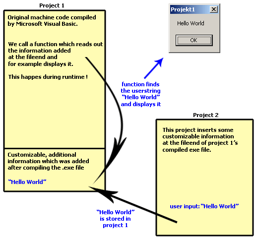

Hi everybody ;) This will be a rather small tutorial explaining how to create executable files during runtime ! I have to begin by saying that my English isn't that good. But I hope this won't be a bar.
Method
Ok. This this tutorial is named "Create" exe files. Creating does not mean compiling! What we do is coding an exe file that opens itself for read access during runtime. Then it'll read out customizable information we stored at the fileend using another vb project. Uh, this sounds a bit complicated and I wished my English was better and would allow me to be more precise ... I'll try to make everything more clear by some pictures:
We use two vb projects. Number one reads out information from its own fileend as explained, number two is meant to modify these information:

Example Project
This example discribes how to do an project that is able to create an exe file during runtime which will display an customizable messagebox. This sounds rather stupid but you'll notice that the used method is VERY EFFECTIVE. For example some time ago I coded a patchengine using this bas file. This Patchengine compared two files. And if differences were found a new exe file was generated containing only these differences. This exe could then be used to apply the found changes to the original file. (oh god my English ;( i hope you know what a patchengine does :)
But let us start right now:
1.1.)
Private Sub Command1_Click() |
Private Sub Command1_Click() |
I'd like to say thanks to SN[-i-]PER who I meet at #vb on dalnet. He did the testing.
And to Chris Buckley. I used his
code to convert the vb source to html.